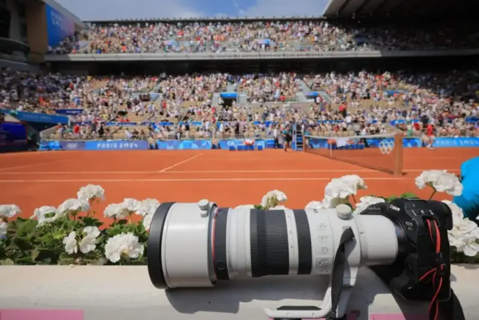
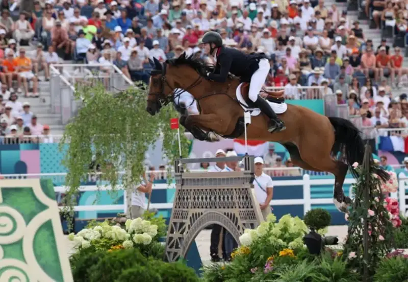
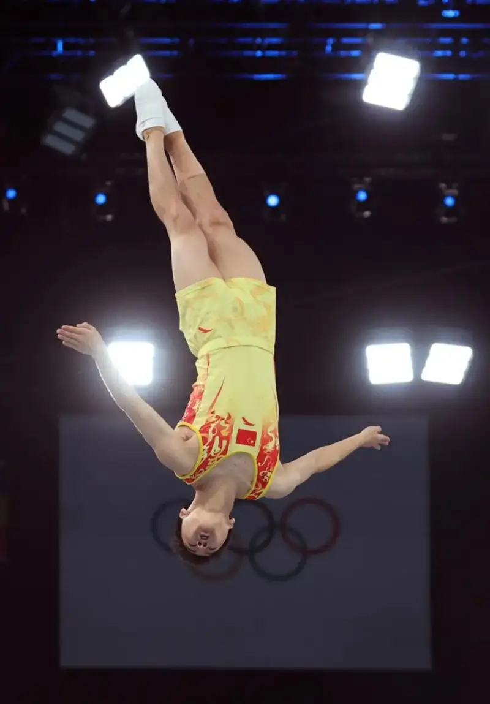
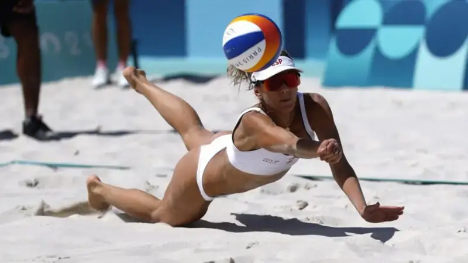
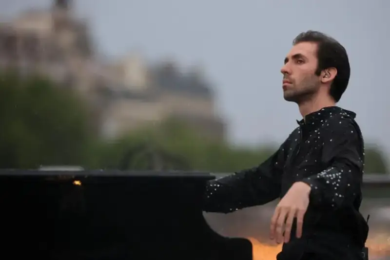
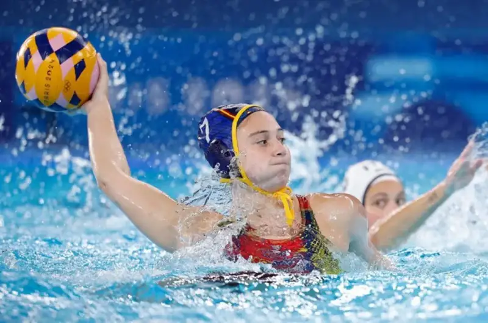
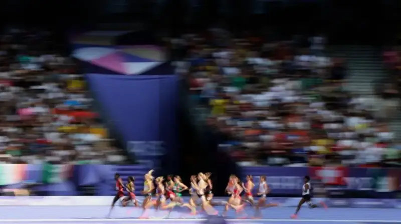
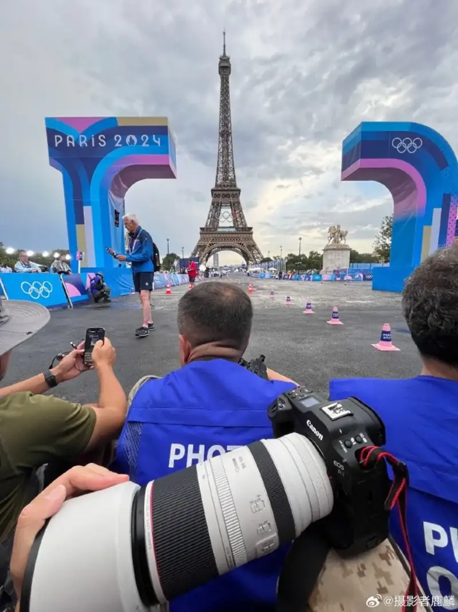

Photo by Lu Lin
To shoot as a sports photographer at the Paris Olympics is both an honor and a recognition for the photographer and the camera in hand, and also a severe test.
At past Olympics and other major events, sports photographers often used flagship DSLRs such as the Canon EOS 1D and EOS 1D-X series. These cameras have very long battery life and can finish a full day of shooting in the harshest conditions (extreme cold, extreme damp).
Today, the Canon EOS R1 carries on that proven reliability and has become a ready tool for sports photographers at the Paris Games.
Hand-held shooting without shake
To stop hand shake from blurring the frame, the concept of a safe shutter speed was born: the shutter speed should be faster than the reciprocal of the lens focal length. As the megapixel count rose, a shutter speed at or above the safe value is not fully safe. At the Olympics, photographers often use super-telephoto lenses of 400mm, 500mm, or even 600mm, which pushes the safe shutter speed even higher.

August 2. Charles of Britain in the competition. Britain won gold in the equestrian team jumping grand prix final at the Paris Olympics. Photo by Yang Lei, Xinhua.
Canon EOS R1, f/4.0, 1/1600s
In the DSLR era, Canon put IS optical stabilization inside the lens to cancel movement from hand shake. The new flagship EOS R1 body now has a 5-axis in-body stabilization system. So even when the lens has no IS, the shot is still stabilized and the keeper rate rises.
When the lens has IS, it works together with the 5-axis body stabilization of the EOS R1 for an even better result. At the center of the frame, it can compensate shake up to 8.5 stops of slower shutter speed, and about 7.5 stops near the edges.

August 2. Wang Zisai of China in the competition. The men's trampoline preliminary was held at the Bercy Arena at the Paris Olympics. Photo by Cao Can, Xinhua.
Canon EOS R1, f/2.8, 1/2000s
Compared with the EOS 1D-X Mark III DSLR, the EOS R1 body is about 330 grams lighter and more compact. With smaller, lighter RF lenses, hand-held shooting is even easier. The new RF 70-200mm F2.8 L IS USM, one of the big three pro zooms, is about 27% shorter and 28% lighter than the same-spec EF 70-200mm F2.8L IS III USM DSLR lens, and the image quality is higher.
Sports photographers at the Paris Games must often hold the camera for long stretches. A lighter, smaller system lowers the burden and lets them put more energy into the shooting itself.

August 5. Moreno of Spain digs the ball. In the women's beach volleyball round of 16 at the Paris Olympics, the Spanish pair Alvarez and Moreno beat the Dutch pair Stam and Schoon 2-1 to reach the quarterfinals. Photo by Fei Maohua, Xinhua.
Canon EOS R1, f/2.8, 1/3200s
All-weather shooting, rain or shine
Shooting outdoor Olympic events, you cannot avoid rain. It can be clear one moment and stormy the next. If the event goes on, the photographer's work does not stop, so the camera must keep working in bad weather. The opening ceremony saw exactly this: a sudden heavy rain, and the photographers on site kept shooting in the rain.

July 26. An artist plays the piano at the opening ceremony. The opening ceremony of the 33rd Summer Olympic Games was held in Paris, France. Photo by Li Gang, Xinhua.
Canon EOS R1, f/3.2, 1/1600s
As a flagship pro mirrorless camera, the EOS R1 is built for all weather. The body shell and inner frame are magnesium alloy, which is strong, light, and dissipates heat. The battery chamber, card slot, body seams, port covers, dials, and buttons all use sealing materials. The few parts without seals still use high-precision parts that resist dust and drips.
Under heavy burst shooting or video, the camera's heat used to trouble photographers and even force a pause to let it cool. To manage heat from the sensor, processor, and card slot, the EOS R1 uses aluminum plates and graphite sheets inside, so you can shoot for long stretches.

August 4. Elena (left) of Spain in the match. In the women's water polo group B match at the Paris Olympics, Spain beat Italy 13-11. Photo by Zhang Yuwei, Xinhua.
Canon EOS R1, f/2.8, 1/2500s
For battery life, the EOS R1 has a built-in vertical grip that takes a larger battery. This is a hallmark of flagship bodies and is easy to recognize. The EOS R1 uses the same high-capacity LP-E19 battery as the EOS-1DX Mark III.
With the electronic viewfinder, the EOS R1 shoots about 700 frames in economy mode and about 500 in smooth mode. With the rear screen in live view, that rises to about 1330 and 1130. From past experience, sports shooting uses high-speed burst, and one battery actually lasts for more frames.
The EOS R1 also supports USB power and charging. You can use a PD fast-charge power bank to power or charge the camera, for very long shooting.
Fast transfer for instant output
In the age of social media, Olympic coverage needs strong timeliness, and photographers must send their shots off the field fast. With many reporters and fans, the network may be slow or noisy, so the camera itself needs reliable wireless or wired transfer.
July 26. Ma Long, table tennis player and flag bearer of the Chinese delegation, waves the national flag before the opening ceremony. The opening ceremony of the 33rd Summer Olympic Games was held in Paris, France. Photo by Cao Can, Xinhua.
Canon EOS R1, f/2.8, 1/2500s
In the DSLR era, the EOS 1D-X series had an Ethernet port for stable wired transfer. The new EOS R1 adds support for the high-speed wired standard (2.5Gbase-T). Even when the on-site Wi-Fi is slow, the photographer can upload shots at once and win the race to report.

August 6. A runner in the competition. The first round of the women's 1500m was held at the Stade de France at the Paris Olympics. Photo by Li Gang, Xinhua.
Canon EOS R1, f/22.0, 0.1s
Besides fast, reliable wired transfer, the EOS R1 supports several wireless options. Through multi-band Wi-Fi, the photographer can browse and download photos with a phone app or send them to a computer. The EOS R1 can also send photos or be controlled by a USB Type-C cable.
A flagship camera is not only about strong image quality, fast autofocus, and burst speed. It is also about letting a professional finish the job and record the best moments of the event in hard conditions. The EOS R1 carries on its lineage. With strong all-round performance, the ability to handle complex scenes, and reliable, long battery life, it lives up to its flagship status.

Photo by Lu Lin